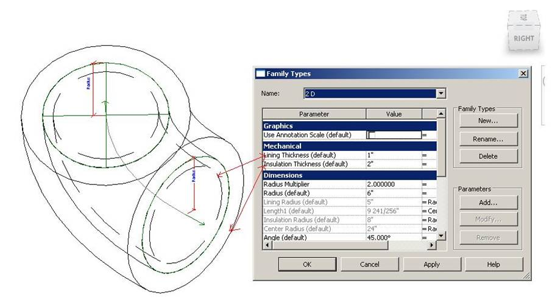

Duplicate Family Solids
Here is a question handled by Joe Ye on multiple occurrences of solids in a pipe family definition.
Question: We were surprised to discover that the solids inside a pipe family are duplicated. This is an issue for us, because we want to determine the relationship between the family symbol and the corresponding geometrical solid. We would like to add symbol properties such as a subcategory to the solid. During the export, we don't know which sub category is used for presentation on the screen. We retrieve all the solids, but their subcategory is not defined, so we cannot determine whether or not to export the data.
Answer: There are three solids in the family definition, and they represent three different parts of the pipe. One is for the pipe fitting insulation, another is for the pipe fitting lining, and the third for the pipe itself.
If the parameter values Lining Thickness and Insulation Thickness are zero, all three solids are identical. Otherwise, their sizes are different. Here is an example displaying non-zero Lining Thickness and Insulation Thickness parameter values:

According to which solid you need to export, you can compare the sizes and export only the one that you require.
For example, if you only want to export the insulation size, then you can search for the largest solid and export that. If you want to export the lining solid, export the smallest solid.
If the Lining Thickness and Insulation Thickness are both zero, then exporting any one of them will work.
By the way, for a pipe fitting, there are only two such solids.
Many thanks to Joe for this explanation!